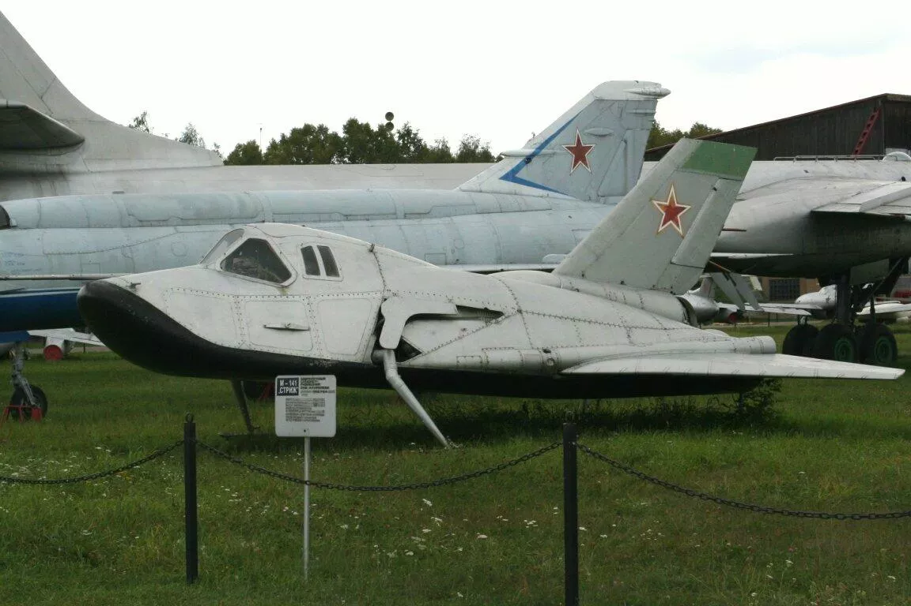
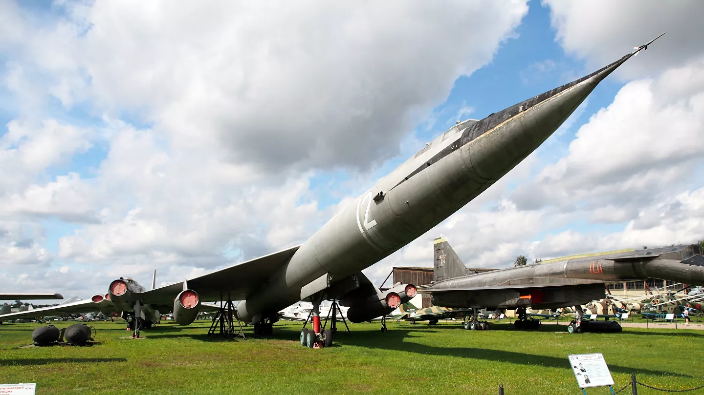
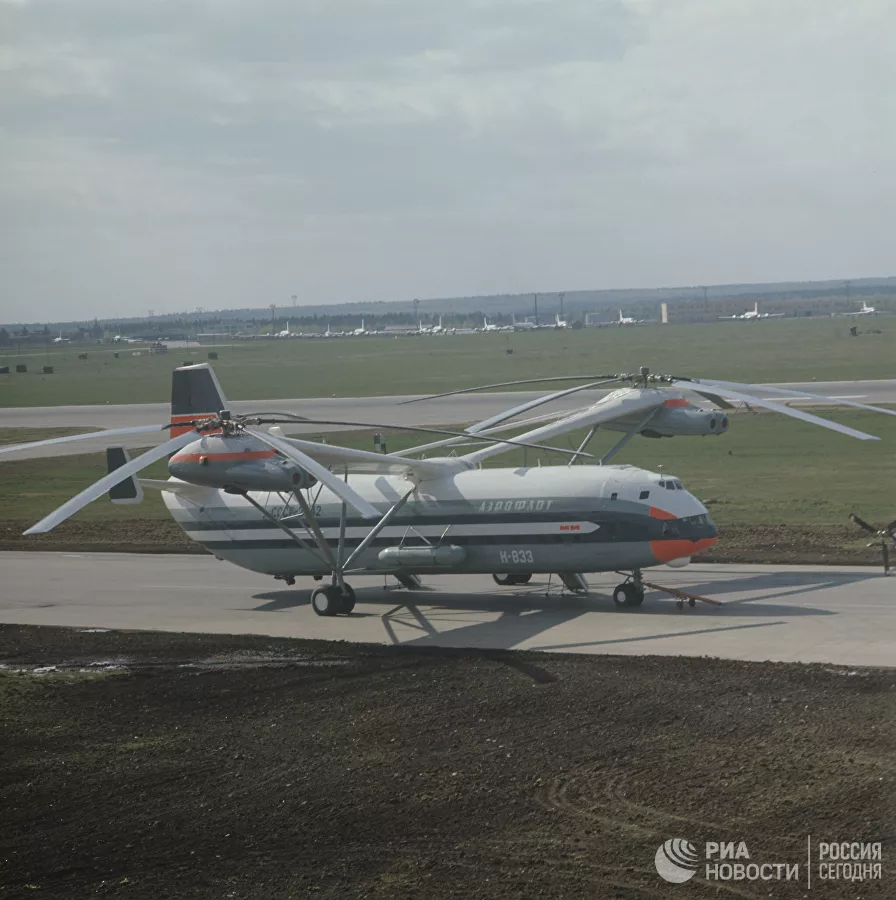

Главная
Неудачные проекты СССР/России
-
МиГ-105.11
В годы холодной войны в США и СССР конструировали космические самолеты, которые в перспективе предполагалось использовать в качестве орбитальных бомбардировщиков. За океаном создали экспериментальный X-20 DynaSoar, у нас — опытный МиГ-105.11, прозванный за характерные обводы фюзеляжа "лаптем".
Его собирались выводить на орбиту межконтинентальной баллистической ракетой Р-7, однако до этого дело не дошло. В конце 1970-х прототип тестировали на дозвуковой скорости, сбрасывая с самолета-носителя — специально переделанного для этого стратегического бомбардировщика Ту-95.
Дозвуковой прототип разгонялся до 800 километров в час, весил три с половиной тонны. Управлял им один пилот. Было несколько вариантов: для фото- и радиоразведки, для поражения авианосцев ракетами с ядерной боевой частью, для перехвата космических целей.
Впрочем, испытания единственного опытного образца МиГ-105.11 завершились аварией — 13 сентября 1978-го орбитальный самолет сильно пострадал при посадке. В дальнейшем проект закрыли из-за чрезмерной дороговизны. Уникальный "Космический МиГ" хранится в авиамузее в подмосковном Монино.

-
М-50
В ответ на программу американского сверхзвукового высотного бомбардировщика XB-70 "Валькирия" к работе над собственным самолетом этого класса в 1956-м приступили в ОКБ Мясищева. В результате получилась машина классической схемы с треугольным крылом и стреловидным цельноповоротным оперением, с фюзеляжем минимального поперечного сечения. В мотогондолах размещались четыре двигателя — два под крыльями и два на их концах. Максимальная дальность М-50 по проекту достигала 14-15 тысяч километров, скорость — до 1900-2000 километров в час.
Прототип М-50 поднялся в воздух 27 октября 1959-го. За год совершили 11 испытательных полетов, но скорость не превышала 1090 километров в час. Стало понятно, что с имеющимися двигателями преодолеть звуковой барьер не получится. Силовые агрегаты поменяли, однако достичь сверхзвука так и не удалось.
Работы по этому самолету прекратили в 1961-м из-за несоответствия проектных характеристик практическим, а также ввиду развития ракетных средств доставки ядерного боезаряда. Американцы закрыли программу XB-70 по той же причине.

-
Ми-12
Советскому Союзу принадлежит до сих пор никем не побитый рекорд — самый тяжелый и грузоподъемный вертолет. Это транспортный Ми-12, впервые оторвавшийся от земли 10 июля 1968-го. Сверхтяжелая машина грузоподъемностью более 30 тонн предназначалась для перевозки компонентов межконтинентальных баллистических ракет для РВСН.
Визитная карточка вертолета — боковое расположение двух несущих винтов на крыльях обратного сужения, которые приводились в движение четырьмя двигателями Д-25ВФ. Экипаж — шесть-десять человек, вместимость — 196 пассажиров. Масса пустого Ми-12 превышала 69 тонн. Вертолет разгонялся до 260 километров в час и поднимался на высоту 3500 метров.
MGID
Всего построили два прототипа Ми-12. Первый в 1971-м году показали на выставке в Ле Бурже. Машина произвела сильное впечатление на делегацию из США, и Американское геликоптерное общество наградило ОКБ Миля "Призом И. И. Сикорского", которым отмечают выдающиеся достижения в области винтокрылой техники. Однако в серию Ми-12 не пошел.
К этому времени у военных отпала необходимость в вертолете такой грузоподъемности благодаря созданию легких и эффективных стратегических ракет на мобильных пусковых установках. Все потребности Вооруженных сил удовлетворялись вертолетами более легкого класса. Первый прототип находится на территории Московского вертолетного завода, а второй передан в Музей ВВС в Монино.
